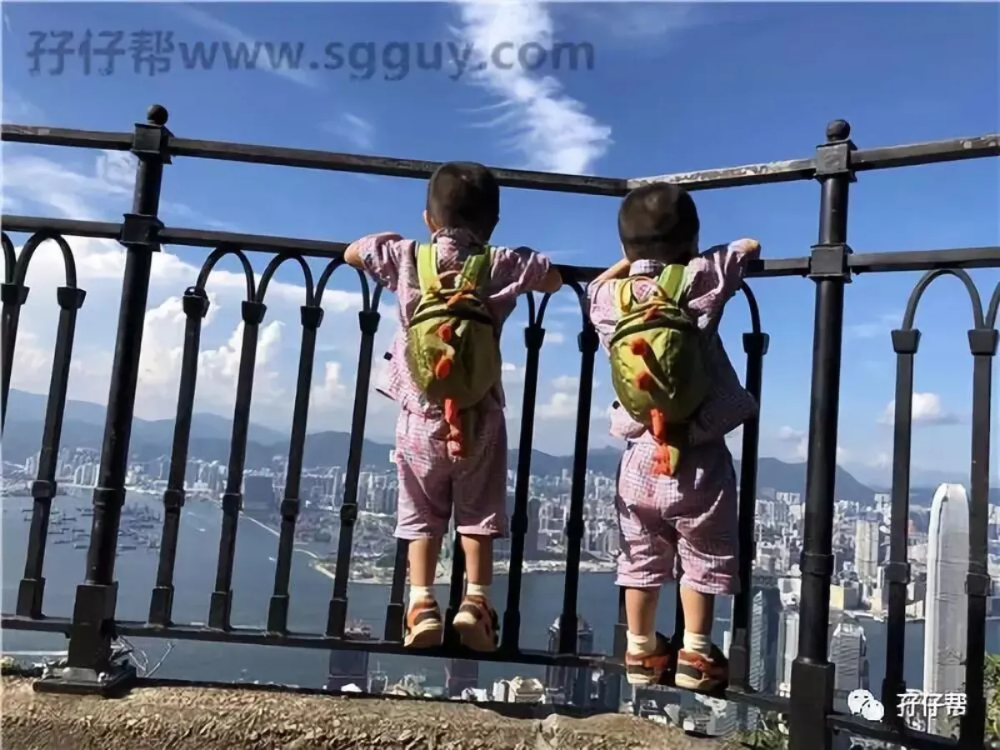
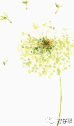
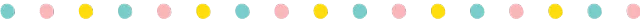
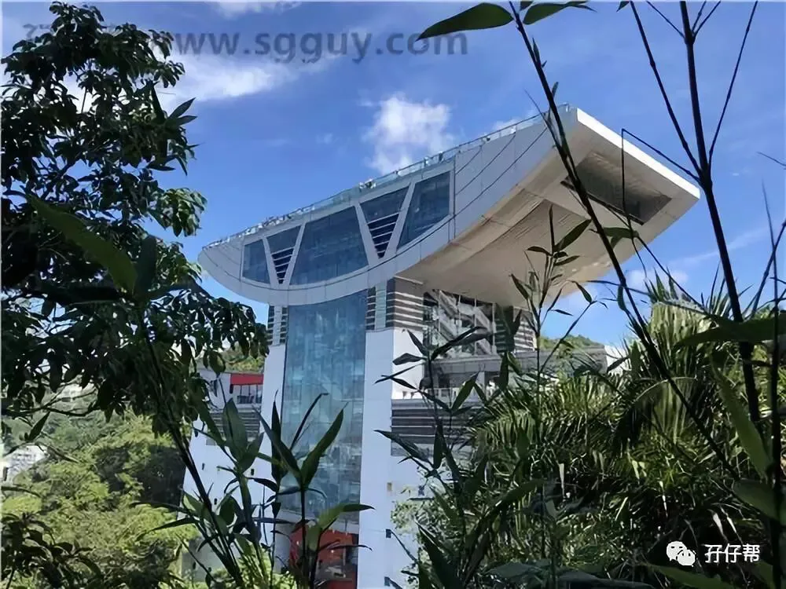
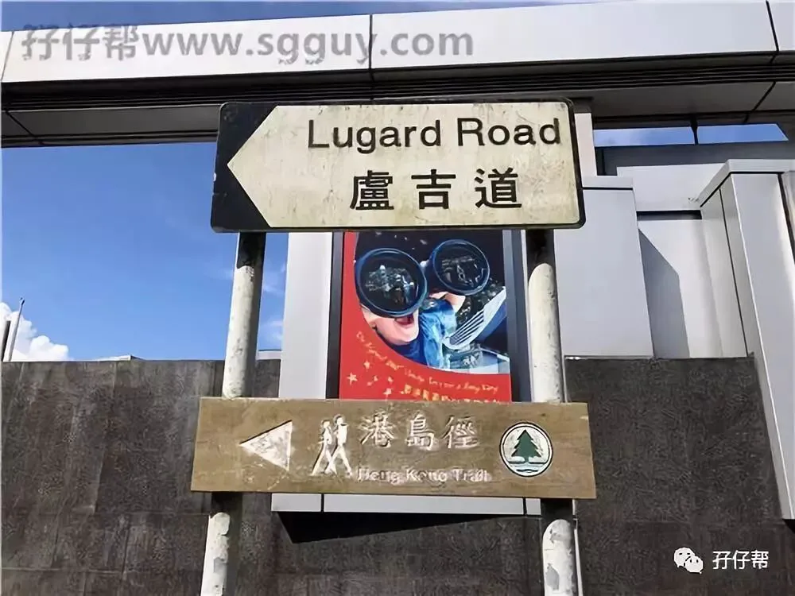
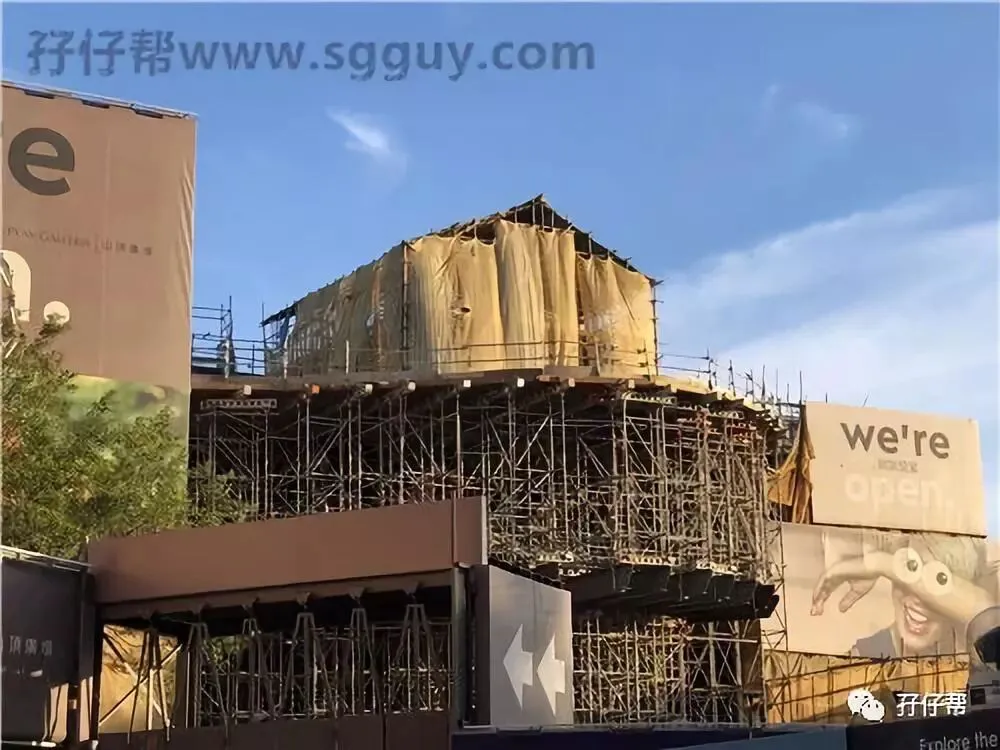
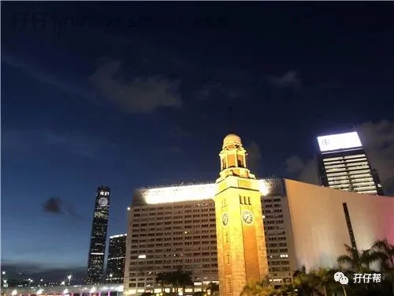
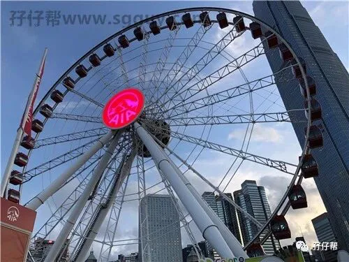
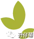

背景，圆圈兄弟3岁11天
地点：香港太平山顶
人物：双胞胎圆圆&圈圈，圆圈爸，圆圈妈
这个蓄谋已久的出游计划从今年三月份就开始酝酿，一直因为不断凭空冒出来的各种破事搁浅了，终于在这节骨眼上被我提上日程。为啥说是“节骨眼”呢？因为正赶上暑假，香港的出入境旺季，给本次出游带来了极大的不便！
我们的计划是徒步香港太平山顶,绕着卢吉道和夏力道走一圈，即山顶步行环回步行径。
我们的路线是：福田口岸—上水广场—中环码头—山顶广场—山顶环回步行径--缆车—天星小轮—星光大道--红磡地铁站-罗湖口岸
01
路上
这是圆圈兄弟第二次去香港，第二次去太平山顶。
为了严格贯彻落实“穷养男孩”的方针政策，我和圆圈爸又确认了下眼神—不开车去。
你知道不开车去的结果吗？我们的住处距离福田口岸有37公里。
意味着几乎要1个半小时的时间才能抵达福田口岸。到底福田口岸已经是中午12点了。
温馨提示：
如需“富养女儿”的双胎家庭，可自驾车到福田口岸附近，把车停在时代广场（上午10点钟到，应该还有我位置停），去年我和圆圈爸去香港扫货就把车停在时代广场，停车费花了35元。
以下是时代广场的收费标准参考：
前3小时 每小时5元，3小时后，每小时1元，最高35元/天
02
过关
10个人8个半是儿童。没办法，因为正好是暑假出游旺季，香港那样的旅游胜地，即便不是暑假，出入境都是人山人海。
我还打小算盘，抱着孩子是否可以走母婴绿色通道。
晕。母婴绿色通道更多人！
也许是苍天垂怜，不忍心我一个弱女子在嘈杂拥挤的环境下，还要随时眼疾手快应付圆圈兄弟可能会冒出的各种小问题。
反正是天助我也！
入境处的工作人员居然在我的身边多开了一个入关通道，我们在特别通道的眷顾下，半个小时候就通关了。
插播一则小遭遇：
因为7-11的八达通充值只收现金，而我们去香港居然牛逼到不带港币，居然不带港币，居然不带港币（都是给马云叔叔宠坏的）。结果就是用100块人民币换了104块港币，须知道当天的汇率是0.87啊！
我从外币兑换处那人的眼神读出一句话：大陆人真是钱多人傻！
03
觅食
乘坐东铁线，约12点半抵达上水广场，觅食！
这个觅食很痛苦，虽然香港已经去过N次了，但都是扫货为主，很少在香港奢侈地吃一顿饭！
这下悲剧了，居然在上水广场找不到吃饭的地方，好不容易找到一家，都是意粉，公仔面和没看明白是什么菜色的饭菜。
最后在上水名都广场某角落找到一家茶餐厅。将就着吃了一顿难吃，难堪，难过的中饭。
因为又是只收现金港币，我们只好拿着人民币一比一的比例支付了餐费！
考虑到带着孩子，圆圈兄弟早餐也没怎么吃，只好忍了！
不然我情愿吃土也不想被香港同胞误以为我就是传说中钱多人傻的“土包子”
04
坐巴士
吃完混乱的午餐已经是下午1点30分了，期间和圆圈爸的意见不统一，纠结去太平山顶坐公交车还是坐地铁。
最后决定相信圆圈爸的“查询功能”（出游的所有行车路线都是圆圈爸安排，我只负责出游路线）坐公交车去，978路双层巴士可直达中环码头
978路巴士全程高速，2点30分抵达中环码头，我们在此站下车之后很顺利在附近站台找到了15路车的停靠点，接着换乘15路车到太平山顶。
坐15路车的好处就是可以沿途欣赏到香港很多依山而建的豪宅，体验下双层巴士在惊险刺激的盘山公路是如何一次次挑战你的肾上腺素的。
其实也可以坐978路车到达邮政总局，然后步行10分钟左右到山顶缆车的售票处。但是考虑到已经是下午的3点钟了，根据第一次去太平山顶的经验，游客大多数都是三四点钟开始坐缆车上山顶看香港夜景的，此刻去做缆车到山顶无疑是自寻死路。
温馨提示：
香港的巴士，报站语言有中文+英文+粤语。声音不大且只报一次且没人通知，要自己去按铃，稍不留神就会坐过站，被深圳的司乘人员的大嗓门和热情友好宠坏的我，表示真的很不适应。
05
开始徒步
到达山顶广场已经是3点半了，
我们下车之后跟着人群直接走出巴士站，大概100米左右就看到卢吉道的入口了，正式开始我们的山顶环回步行径。
实际上夏力道和卢吉道是挨着的，反正不管哪个入口进去，最后都会回到山顶广场。我们选择走人流比较多的卢吉道。
香港为什么堪称亚洲四小龙之一，确实不是浪得虚名的，
比如这种公共设施建设，香港就做的很好，登山道路牌指示非常清楚，隔50米远就有一盏路灯，小道上也很干净，看不到一丁点的垃圾纸屑。
虽然垃圾桶不是很容易找，但是这恰恰反应了当地人爱护环境的观念很强，爱护环境不是靠垃圾桶而是所有人根深蒂固的环保意识。
登山道丛林茂密，即使是现在艳阳高照的高温天气，依然不觉得炎热，到处都有乘凉的地方，还有架空出去的观景台。
沿途可以看到整个维多利亚港的美景，无法用语言形容，还是直接看图吧！
作为一个泡在港产片长大的广东妹子，我实在想发表下真实心声：每次香港回来我就发誓再也不去香港，但是很快又有蠢蠢欲动的心想要再去一次。
香港于我而言，就是个可远观而不可亵玩焉的小骚货！
总能不经意间挑逗到你那颗粗俗的小心肝。
插播一则圆圈的小艳遇：
跟我们一起同时徒步的还有两位外国长腿妹子，我们在自拍全家福的时候被围观了。虽然我的英语比较蹩脚，但她们的对话还是被我GET到了，一直夸圆圈兄弟可爱，夸我们的小家庭很有爱。为娘表示，那颗粗俗的虚荣心又不小心露出了狐狸尾巴！哈哈！
沿着卢吉道走到夏力道在绕回山顶广场，耗时3小时。
我们三点半开始徒步，6点半左右才回到山顶广场。
温馨提示：
多备点干粮和水，香港的物价本来就贵，更何况是在景区里面，一块小方包20港币，一瓶550ML 要8港币。
我们走完登山道已经弹尽粮绝了，不得不在自助售卖机破费买了两瓶水。
我发誓如果瓶子可以吃，我一定把瓶子也舔进去，才对得起8港币的价值！
06
山顶广场瞎逛
因为山顶广场正好在装修升级，非常遗憾不能上去看维多利亚港。
而需要收费的凌霄阁也因为时间关系没有上去体验！
圆圈喜欢看小火车，我们就在缆车外的小道上看来来往往的缆车上去下来。
圆圈看到自己感兴趣的东西，兴奋得不得了。我和圆圈爸被深深地打击到了，我们精心准备的徒步太平山还有一览无遗的维多利亚港美景远远比不上那破缆车。
哎！此乃天意啊！
7点10分，看圆圈对缆车的热情度消耗得差不多了，我们决定坐缆车下山。
有八达通的游客可直接刷卡进去，也可在票务处买票进去。
好在人不多，我们很快就坐上了缆车。
温馨提示：
需要带孩子在山顶看夜景的家长，请一定记得给孩子准备长袖外套，如果是冬季，要带厚的防风外套。山顶上风很大，我们7点钟左右在山顶排队坐缆车的时候，已经很大风了。再晚一点就会感觉到丝丝凉意，分分钟都会跑出鼻涕虫的意思！
坐缆车的位置也很讲究哦，隆重推荐坐三人位置的座位，对着维多利亚港，视野比较好。
07
天星小轮
缆车下来之后就有多路公交车到各个地方，我们坐上15C 路公交车回到中环码头，打算再次体验下天星小轮。
请原谅圆圈妈对船这玩意的强烈好奇心，记得第一次带圆圈去香港，那么紧凑的行程，居然把天星小轮来回坐了两遍！
我甚至觉得做渔夫的太太真是件幸福的事情！哈哈，因为嫁鸡随鸡嫁狗随狗，可以天天坐船。不像现在，圆圈爸搬砖，圆圈妈码字。
哎！命啊！
这一次，由于时间关系，只能泪眼汪汪地坐一次天星小轮了。
来，上几张，夜幕降临时的中环码头和摇曳在天星小轮上，我眼前的维多利亚港！
08
维多利亚港夜景欣赏
中环码头的对岸就是尖沙咀啦，可惜星光大道还在维修中，暂不对外开放！
我们打算看下香港的维多利亚港夜景就打道回府了，
居然听到一则广播，8点钟就免费的灯光秀！
瞎猫碰上死耗子，居然有这等好事！
但代价是要等20分钟。
圆圈的兴致很好，哥俩在黑压压的人群推中自娱自乐，我和圆圈爸终于可以稍微放松了会，互相靠着静静地看了一会夜景！
非常遗憾，灯光秀有点鸡肋！
跟前段时间刷爆朋友圈的深圳会展中心灯光秀相比，实在是大巫见小巫！我们看了5分钟不到就赶紧闪人了。
维多利亚港距离最近的尖沙咀东地铁站还有段距离，我们只好坐了趟公交车5C路到红磡地铁站。在那里可以坐上去口岸的直达列车。
一路颠簸之后，11点半终于回到深圳家！圆圈的徒步太平山顶之旅结束！
圆圈妈的经验分享
做好攻略。
虽然说走就走很撒酷，但是该做的出行攻略还是要事先准备好的，并保证心中有数！
比如去香港必须准备好港币，哪怕你打包票不扫货。香港是个被宠坏的大家闺秀，很多地方还很保守，不像大陆如一个女汉子一样，手机不离手，打遍天下无敌手。
不要被计划牵着鼻子走。
再万无一失的计划也赶不上变化，尤其还带着两个说翻脸就翻脸的熊孩子。
我们本来计划做缆车上山顶的，可是因为时间点没赶上，只好做公车上去。
我们本来想沿着缆车路线的步行径下山的，结果时间关系，只好坐缆车下山。
因此，带孩子出行，要做好计划被全盘打乱的准备，且还要临危不惧地面对计划被打乱之后如何快速实行B计划！
带着孩子出行，量力而行。
只要孩子有不适应的地方，请一切以孩子为主！
我们为了赶在3点前到达山顶缆车入口，急匆匆地吃了中饭，圈圈嘴里的饭菜还没下咽就被我们拖着赶路了。期间，圆圆一直哭闹说肚子疼，而我居然充耳不闻，甚至没有安慰，只管拖着哭泣的他往前走！
现在想想觉得自己完全是为了完成计划中的旅程，而忽视了孩子们的感受！
这样的父母，请打赏五十个大板！
结语:
带孩子去旅行，尤其是拖着两个熊孩子上路，需要很强大的内心。
特别是当你精心准备的美景展现在他们眼前的时候，你收到的不是孩子哇一声赞美，而是淡漠！无表情！
我自以为是的维多利亚港美景就在眼前，可是在圆圈看来跟附近公园的花花草没啥区别。
说实话，没有内伤是假的！这么辛苦把你们拖上山居然是这等反应！
即便如此！
我依然坚持带着圆圈兄弟去旅行，而且，乐此不疲！
虽然真的很累，尤其是圆圈兄弟闹别扭的时候，数次想要把他们拎起来暴打一顿。
我是个在职妈妈，跟圆圈的相处时间相对较少，虽然每天可以见面，但也仅仅限于晚上临睡时的读绘本时间。只能通过每次的出行中，去了解到圆圈兄弟的生长发育情况，尤其是个性发展，性格秉性和社交能力方面，
比如通过这一次的出行，我发现圆圆没有团队意识，嘴皮子都磨破了，依然我行我素，自个走自己的路，完全不管大人是否跟在身边，
在这一次徒步中，我有好几次想要打他一顿都被圆圈爸给按住了。这小屁孩有待教育，欠收拾！
而圈圈相对守规矩，我们大人交代过不能做的事情，他都会记在心上且落实到行动中去，遇到人多的地方，会拉紧我们才走，即使看到很喜欢玩的东西也会征询意见拉着大人一起去。
通过这次的观察，我更加明确了对圆圈哥俩的教育方向。
虽然他们是我亲生的，与我血浓于水，但是如果我和他们没有交流，没有故事，没有一起经历过一些事情，喜怒哀乐，酸甜苦辣。我们的亲子关系肯定会形同虚设，脆弱不堪。等到他们青春期之后更加无交流，无沟通了！
不知道若干年后，圆圈长大了会不会想起我和圆圈爸曾经拖着疲惫的身躯，顶着路人不解的目光，带着他们走南闯北，嬉笑怒骂。
不管怎样，我相信，只要他们回忆起来，那种味道一定是幸福而甜蜜的！他们一定会感恩我和圆圈爸在亲子道路上所付出的努力！
作者|圆圈妈
资深屌丝女+腐女一枚
家有孖仔男宝两枚+IT男人一枚
微信：孖仔帮babytwins-mummy
博客：孖仔帮www.sgguy.com
如需入孖仔帮双胞胎妈妈交流群
请＋圆圈妈的微信号！
点击阅读原文，可直接进入博客网站








